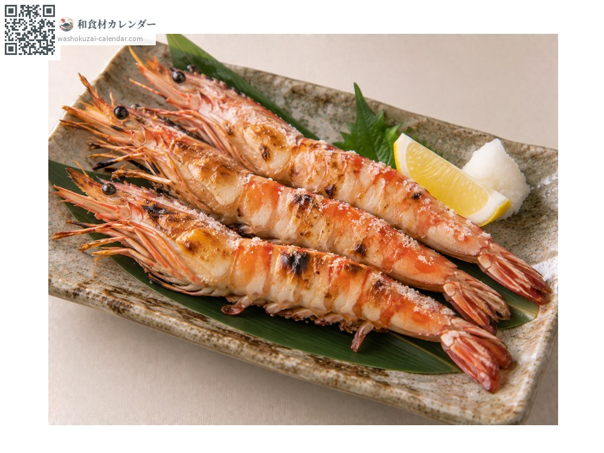
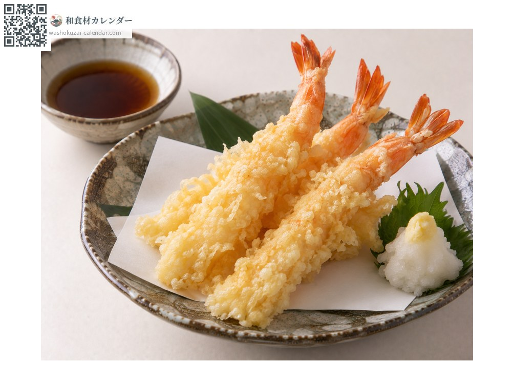
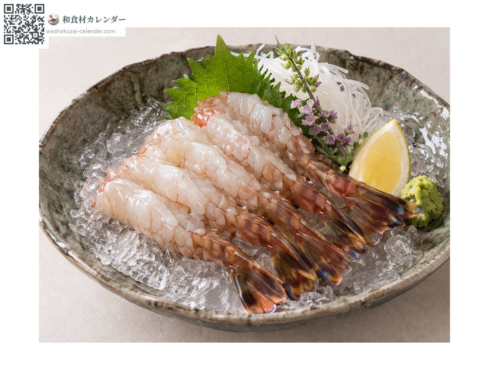
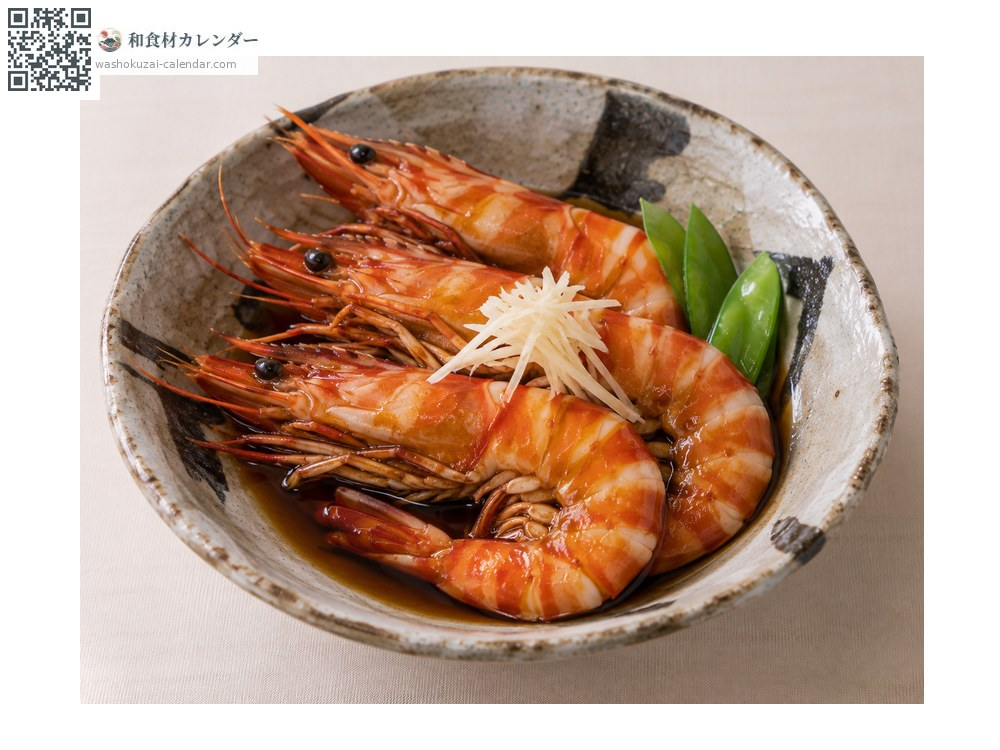

Seafood
Kuruma prawn
クルマエビ くるまえび kurumaebi
Also known askurumaebi
At its best in Jan, Feb, Nov, Dec

When it is at its best
Jan
Feb
Mar
Apr
May
Jun
Jul
Aug
Sep
Oct
Nov
Dec
In seasonAvailable
How to cook

Shioyaki (salt-grilled)
Grilled in the shell. Very fragrant.

Tempura
Straightened out, then fried.

Sashimi
Eaten live as odorigui.

Umani (simmered in sweet soy)
Simmered in sweet soy.
How to choose
Taut shells with clear markings. Live prawns are best.
Storage
Keep live prawns in sawdust in the fridge. Cooked prawns keep one or two days.
Main areas
Good to know
The name comes from the wheel-like pattern when it curls up. Wild stocks have declined and most are now farmed.